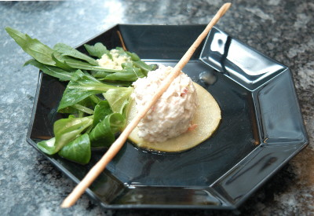

| Zutaten als Vorspeise für 4 Personen: | |
| 1 Stück = 50g | geräuchertes Forellenfilet |
| 1/4 | Zwiebel |
| 1 | Chilischote (nach Befinden) |
| 50g | Frischkäse mit Kräutern |
| Salz | |
| Pfeffer | |
| Currypulver | |
| 1 | Boskop Apfel |
| Zitronensaft | |
| Öl | |
| Weisswein | |
| Ingwer | |
| Nüsslisalat | |
Am Vortag: Marinade für die Apfelscheiben vorbereiten: Den Ingwer fein hacken. Mit Zitronensaft, Öl, Weisswein Salz und Pfeffer gut vermengen. Den Apfel waschen, trocknen und mit dem Apfelentkerner entkernen. Den Apfel in 2-3mm dicke Scheiben schneiden und in der Marinade ein paar Stunden oder über Nacht einlegen.
Das Forellenfilet in kleine Würfelchen schneiden. Wer heikle Gäste erwartet nimmt mit der Pinzette die feinen Grätchen heraus. Die Zwiebel fein hacken und mit dem Fisch in eine Schüssel geben. Den Chili entkernen und die Hülle fein schneiden. Mit dem Frischkäse zum Fisch geben. Zitronensaft zugeben (nicht zu viel sonst wird es ein flüssiger Brei). Gut vermengen, abschmecken. Zwei Stunden kalt stellen und falls nötig nochmals abschmecken.
Zum Anrichten erst einen abgetropften Apfelschnitz auf den Teller geben. Vom Tartar mit 2 Löffeln oder mit dem Eiscreme-Portionierer einen "Nocken" abstechen und darauf geben. Ein paar Büschel Nüsslisalat durch die Marinade ziehen und daneben anrichten. Ein Grissini darauf geben.
http://www.kochbar.de/rezept/421303/Tapas-Fisch-Forellentatar.html
Inspiriert durch eine feine Vorspeise im Hotel Schatzalp habe ich mich auf die Suche nach einem Rezept gemacht und auf dem Web dieses gefunden. Ich habe es zur Vorspeise bei meinen Weihnachtsmenus zubereitet und es ist toll gelungen, hat gut ausgesehen und super geschmeckt. RE Jan 2014